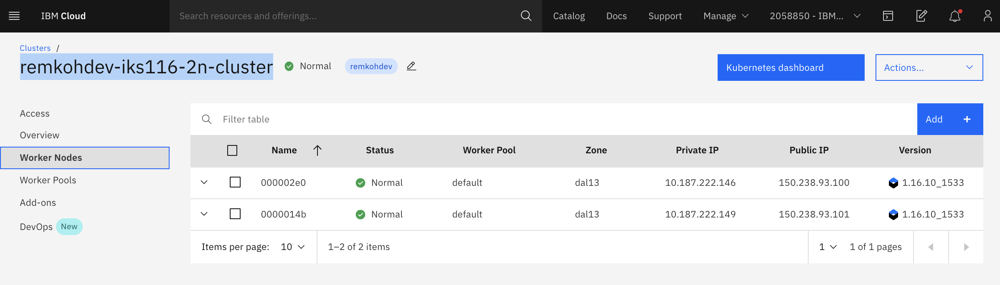
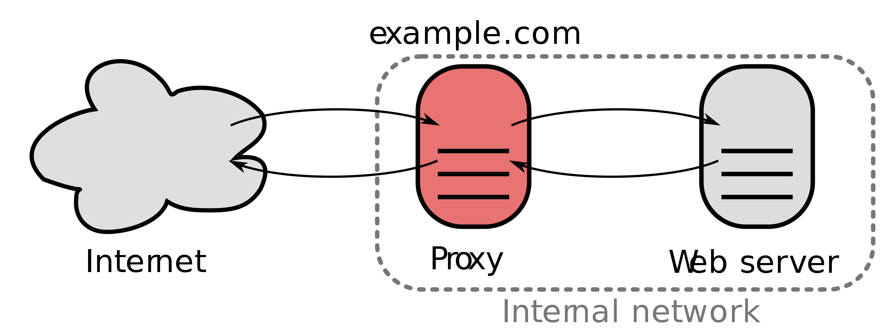
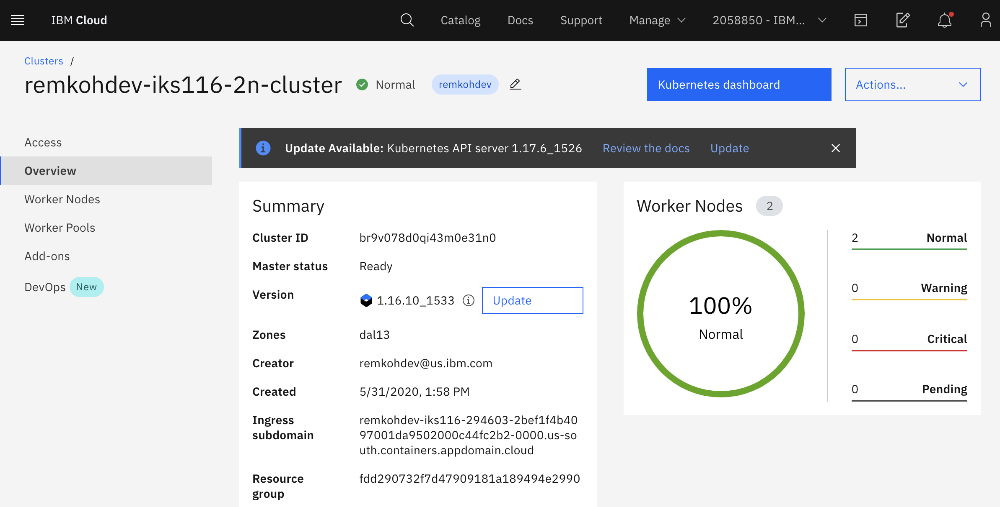

Lab 01 - Kubernetes Networking, using Service Types, Ingress and Network Policies to Control Application Access¶
Self: https://github.com/remkohdev/kubernetes-networking
In this lab we will use several methods to control access to applications on a Kubernetes cluster. We will go through Kubernetes Networking principles and apply different types of Service resources: ClusterIP, NodePort and LoadBalancer. We will also implement an Ingress resource and a Network Policy, while we briefly will talk about Calico policies as well.
You need an IBM account to follow the lab. See the Account Setup and Cluster Access
In the first steps, you access your cluster, deploy a MongoDB instance and a HelloWorld application, which will take about 15 minutes.
During the remainder of the lab, you will create different Service types, an Ingress and a Network Policy.
00. Access Your Cluster¶
Follow the instructions at Account Setup and Cluster Access to claim a pre-created cluster. Go to the Access page to find the login instructions.
Access your Cloud Shell at https://shell.cloud.ibm.com and login to your remote cluster.
Set a CLUSTERNAME environment variable to the name of your cluster.
export CLUSTERNAME=remkohdev-iks116-2n-cluster-labs
Login and download the cluster configuration,
ibmcloud login
ibmcloud ks cluster config --cluster $CLUSTERNAME
01. Setup MongoDB¶
We will begin by deploying a MongoDB database and a HelloWorld application that stores messages into the MongoDB.
I will use Helm to deploy and configure a Bitnami/MongoDB chart. Go to Deploy MongoDB to setup MongoDB for our HelloWorld app.
02. Deploy a HelloWorld App¶
Now, you have a MongoDB installed, follow the instructions to Deploy a HelloWorld App with ClusterIP.
Services¶
Now we can start with the actual lab on Kubernetes Networking.
When we created the Java Spring Boot App called HelloWorld, we created a Deployment. The deployment created also a ReplicaSet with 1 replica of the pods. Because we did not create a Service for the helloworld containers running in pods, they cannot yet be accessed.
When a Pod is deployed to a worker node, it is assigned a private IP address in the 172.30.0.0/16 range. Worker nodes and pods can securely communicate on the private network by using private IP addresses.
However, because Kubernetes creates and destroys Pods dynamically, the location of the Pods, and thus the private IP addresses, change.
With a Service object, you can use built-in Kubernetes service discovery to expose Pods. A Service defines a set of Pods and a policy to access those Pods. Kubernetes assigns a single DNS name for a set of Pods and can load balance requests across Pods. When you create a Service, a set of pods and EndPoints are created to manage access to the pods.
The Endpoints object in Kubernetes is the list of IP and port addresses to the Pods and are created automatically when a Service is created and are configured with the pods matching the selector defined in the Service. A Service can be configured without a selector, in that case Kubernetes does not create an associated Endpoints object.
Let's look at the declaration of the service.yaml,
$ cat service.yaml
apiVersion: v1
kind: Service
metadata:
name: helloworld
labels:
app: helloworld
spec:
ports:
- port: 8080
targetPort: http-server
selector:
app: helloworld
The spec defines a few important attributes, especially selector and ports. The set of Pods that a Service targets, is determined by the selector using labels. When a Service has no selector, the corresponding Endpoints object is not created automatically. This can be useful in cases where you want to define an Endpoint manually, for instance in the case of an external database instance.
The Service maps the incoming port to a targetPort of the Deployment. By default the targetPort is set to the same value as the incoming port field. A port definition in Pods can also be given a name, and you can reference these names in the targetPort attribute of the Service instead of using a port number. In the Service example of helloworld, the deployment.yaml file should then have the corresponding port defined that the Service references by name,
$ cat deployment.yaml
ports:
- name: http-server
containerPort: 8080
ServiceTypes¶
Before you create a Service for the helloworld application, let's first understand what types of services exist. Kubernetes ServiceTypes allow you to specify what kind of Service you want.
The default type is ClusterIP. To expose a Service onto an external IP address, you have to create a ServiceType other than ClusterIP.
ServiceType values and their behaviors are:
- ClusterIP: Exposes the Service on a cluster-internal IP. This is the default ServiceType.
- NodePort: Exposes the Service on each Node’s IP at a static port (the NodePort). A ClusterIP Service, to which the NodePort Service routes, is also automatically created. You’ll be able to contact the NodePort Service, from outside the cluster, by requesting
<Node-Public-IP>:<NodePort>. - LoadBalancer: Exposes the Service externally using a cloud provider’s load balancer. The NodePort and ClusterIP Services, to which the external load balancer routes, are also automatically created.
- ExternalName: Maps the Service to the contents of the externalName field (e.g. foo.bar.example.com), by returning a CNAME record.
An ExternalName Service is a special case of Service that does not have selectors and uses DNS names instead, e.g.
apiVersion: v1
kind: Service
metadata:
name: my-database-svc
namespace: prod
spec:
type: ExternalName
externalName: my.database.example.com
In this example, when you request the service my-database-svc.prod.svc.cluster.local on the cluster, the cluster DNS Service returns a CNAME record for my.database.example.com.
You can also use Ingress in place of Service to expose HTTP/HTTPS Services. Ingress however is technically not a ServiceType, but it acts as the entry point for your cluster and lets you consolidate routing rules into a single resource.
03. ClusterIP¶
Add a Service to helloworld¶
Now you have a simple understanding of the different ServiceTypes on Kubernetes, it is time to expose the Deployment of helloworld using a Service.
Create the Service object with the default type, you already created the Service resource file when you deployed the HelloWorld app in the previous step.
$ kubectl create -f service.yaml
service/helloworld created
Describe the Service,
$ kubectl describe svc helloworld
Name: helloworld
Namespace: default
Labels: app=helloworld
Annotations: <none>
Selector: app=helloworld
Type: ClusterIP
IP: 172.21.161.255
Port: <unset> 8080/TCP
TargetPort: http-server/TCP
Endpoints: 172.30.153.79:8080
Session Affinity: None
Events: <none>
You see that Kubernetes by default creates a Service of type ClusterIP. The service is now available and discoverable, but only within the cluster.
Get the endpoints that were created as part of the Service,
$ kubectl get endpoints helloworld
NAME ENDPOINTS AGE
helloworld 172.30.153.79:8080 43s
To review the full endpoints resource, use the kubectl edit command, but don't make any changes.
$ kubectl edit endpoints helloworld
apiVersion: v1
kind: Endpoints
metadata:
name: helloworld
namespace: default
labels:
app: helloworld
subsets:
- addresses:
- ip: 172.30.153.79
targetRef:
kind: Pod
name: helloworld-5f8b6b587b-lwvcs
Enter <ESC> + :q to exit the commandline vim editor.
The Endpoints object now maps the Service object to the Pod on an internal IP address, so that other pods can access the Service of our HelloWorld application.
04. NodePort¶
The HelloWorld Service is accessible now but only within the cluster. To expose a Service onto an external IP address, you have to create a ServiceType other than ClusterIP. Apps inside the cluster can access a pod by using the in-cluster IP of the service or by sending a request to the name of the service. When you use the name of the service, kube-proxy looks up the name in the cluster DNS provider and routes the request to the in-cluster IP address of the service.
To allow external traffic into a kubernetes cluster, you need a NodePort ServiceType. If you set the type field of Service to NodePort, Kubernetes allocates a port in the range 30000-32767. Each node proxies the assigned NodePort (the same port number on every Node) into your Service.
Patch the existing Service for helloworld to type: NodePort,
$ kubectl patch svc helloworld -p '{"spec": {"type": "NodePort"}}'
service/helloworld patched
Describe the Service again,
$ kubectl describe svc helloworld
Name: helloworld
Namespace: default
Labels: app=helloworld
Annotations: <none>
Selector: app=helloworld
Type: NodePort
IP: 172.21.161.255
Port: <unset> 8080/TCP
TargetPort: http-server/TCP
NodePort: <unset> 31777/TCP
Endpoints: 172.30.153.79:8080
Session Affinity: None
External Traffic Policy: Cluster
Events: <none>
In this example, Kubernetes added a NodePort with port value 31777 in this example. For everyone, this is likely to be a different port in the range 30000-32767.
You can now connect to the service via the public IP address of any worker node in the cluster and traffic gets forwarded to the service, which uses service discovery and the selector of the Service to deliver the request to the assigned pod. With this piece in place we now have a complete pipeline for load balancing external client requests to all the nodes in the cluster.
You don't have sufficient permissions to retrieve the cluster's worker nodes' Public IPs for the account that the clusters were created on, via the cloud shell and the ibmcloud cli. But you can find the worker nodes of your cluster in the cluster detail page in the IBM Cloud UI. Find your cluster via https://cloud.ibm.com/kubernetes/clusters. Select your cluster and go to Worker Nodes, look for the Public IP of one of the worker nodes.

If you do have sufficient permissions you can view the worker nodes of your cluster with the command,
ibmcloud ks worker ls --cluster $CLUSTERNAME
Test the deployment, e.g. with the example values for PUBLICIP and NODEPORT, again be aware that the PUBLIC_IP and NODEPORT are different for each of you.
$ PUBLICIP=150.238.93.100
$ NODEPORT=31110
$ curl "http://$PUBLICIP:$NODEPORT/api"
Welcome to Spring Boot App
$ curl "http://$PUBLICIP:$NODEPORT/api/hello?name=John"
{ "message" : "Hello John" }
$ curl "http://$PUBLICIP:$NODEPORT/api/messages"
[{"id":"5edda3befc271d2b0330b8a6","sender":"John","message":"Hello John"}]
The client connects to the load balancer via a public IP address on the worker node. The load balancer selects a node and connects to it. Kube-proxy receives this connection and forwards it to the service at the cluster IP. At this point the request matches the netfilter rules and gets redirected to the server pod.
05. Loadbalancer¶
In the previous steps, you created a service for the helloworld application with a clusterIP and then added a NodePort to the Service. But you still want a load balancer of some kind in front of your application, whether your clients are internal or coming in over the public network. A load balancer acts as a reverse proxy and distributes network or application traffic across a number of servers.

To use a load balancer as a reverse proxy for distributing client traffic to the nodes in a cluster, you need a public IP address for the service that the clients can connect to, and you need IP addresses on the nodes themselves to which the load balancer can forward the requests.
A service of type LoadBalancer has all the capabilities of a NodePort service but also the ability to build out a complete ingress path. A LoadBalancer also has some limitations: you cannot configure the load balancer to terminate https traffic, do virtual hosts or path-based routing, so you can’t use a single load balancer to proxy to multiple services. These limitations led to the addition of a separate kubernetes resource for configuring load balancers, called an Ingress (see next section).
On cloud providers that support external load balancers, setting the type field to LoadBalancer provisions a load balancer for your Service. The actual creation of the load balancer happens asynchronously with the Service, so you might have to wait until the load balancer has been created.
Load Balancer on IKS¶
The LoadBalancer service type is implemented differently depending on your cluster's infrastructure provider. On IKS (IBM Kubernetes Service), a classic cluster implements a Network Load Balancer (NLB) 1.0 by default.
Load Balancing Methods¶
Before we create the load balancer with NLB v1.0 + subdomain for the helloworld application, review the different Load Balancing Methods on IKS:
NodePortexposes the app via a port and public IP address on a worker node.NLB v1.0 + subdomainuses basic load balancing that exposes the app with an IP address or a subdomain.NLB v2.0 + subdomain, uses Direct Server Return (DSR) load balancing, which does not change the packets but the destination address, and exposes the app with an IP address or a subdomain, supports SSL termination. (Network load balancer (NLB) 2.0 is in beta.)Istio + NLB subdomainuses basic load balancing that exposes the app with a subdomain and uses Istio routing rules.Ingress with public ALB(Application Load Balancing) uses HTTPS load balancing that exposes the app with a subdomain and uses custom routing rules and SSL termination for multiple apps. You can customize the ALB routing rules with annotations (See next section).Custom Ingress + NLB subdomainuses HTTPS load balancing with a custom Ingress that exposes the app with the IBM-provided ALB subdomain and uses custom routing rules.
Create a Network Load Balancer v1.0¶
In the previous lab, you already created a NodePort Service. Patch the service for helloworld and change the type to LoadBalancer.
$ kubectl patch svc helloworld -p '{"spec": {"type": "LoadBalancer"}}'
service/helloworld patched
If your cluster has more than 1 worker node, a LoadBalancer will be created and an external IP address is assigned to access the service.
$ kubectl get svc helloworld
NAME TYPE CLUSTER-IP EXTERNAL-IP PORT(S) AGE
helloworld LoadBalancer 172.21.161.255 169.48.67.163 8080:31777/TCP 24m
The biggest difference you can see is the presence of an External IP address for the service now.
Or describe the helloworld Service,
kubectl describe svc helloworld
A Service of type LoadBalancer was created, 1 of 4 available portable public IP addresses were assigned to the Service. When you create a standard cluster on IBM Cloud, IKS automatically provisions a portable public subnet and a portable private subnet.
Now to access the NLB for the Service of the helloworld from the internet, you can use the public IP address of the NLB and the assigned port of the service in the format <External_IP_Address>:<NodePort>. NodePorts are accessible on every public and private IP address of every worker node within the cluster.
Access the helloworld app in a browser or with Curl,
$ EXTERNALIP=169.48.67.163
$ curl "http://$EXTERNALIP:$NODEPORT/api/hello?name=MeAgain"
{ "message" : "Hello MeAgain" }
$ curl "http://$EXTERNALIP:$NODEPORT/api/messages"
[{"id":"5ee6e6206e986548955388ee","sender":"John","message":"Hello John"},{"id":"5ee6e72e6e986548955388ef","sender":"MeAgain","
message":"Hello MeAgain"}]
06. Ingress¶
Ingress is technically not a Service, but a load balancer and router for container clusters. It is a Kubernetes API object that manages external access to the services in a cluster. You can use Ingress to expose multiple app services to a public or private network by using a unique public or private route. The Ingress API also supports TLS termination, virtual hosts, and path-based routing.
When you create a standard cluster, an Ingress subdomain is already registered by default for your cluster, see the previous step. The paths to your app services are appended to this public route of the default Ingress Subdomain.
In a standard cluster on IKS, the Ingress Application Load Balancer (ALB) implements the NGINX Ingress controller. NGINX is one of the more popular load balancers and reverse proxies.
To expose an app using Ingress, you must define an Ingress resource first. The Ingress resource is a Kubernetes resource that defines the rules for how to route incoming requests for apps.
One Ingress resource is required per namespace where you have apps that you want to expose.
Changes to HelloWorld for Ingress¶
I want to access HelloWorld via the Ingress subdomain and a path rule via a path /hello.
You need the Ingress Subdomain and Ingress Secret of your cluster to configure your Ingress resource. Go to your cluster's Overview page to see the Ingress subdomain and secret.

The Ingress Secret will be the first part of the
Ingress Subdomain of your cluster. E.g. if the Ingress Subdomain is the following:
remkohdev-iks116-294603-2bef1f4b4097001da9502000c44fc2b2-0000.us-south.containers.appdomain.cloud
Then the Ingress Secret will be,
remkohdev-iks116-294603-2bef1f4b4097001da9502000c44fc2b2-0000
The Ingress Subdomain has a format like clustername-<hash>.region.containers.appdomain.cloud.
If you have account management permissions, you can use the ibmcloud command in the CLI to retrieve the Ingress Subdomain and Secret,
$ ibmcloud ks nlb-dns ls --cluster $CLUSTERNAME
OK
Hostname IP(s) Health Monitor SSL Cert Status SSL Cert Secret Name Secret Namespace
remkohdev-iks116-294603-2bef1f4b4097001da9502000c44fc2b2-0000.us-south.containers.appdomain.cloud 169.48.67.162 None created remkohdev-iks116-294603-2bef1f4b4097001da9502000c44fc2b2-0000 default
Or,
ibmcloud ks cluster get --show-resources -c $CLUSTERNAME
Once you have the Ingress Subdomain and the Ingress Secret, create an Ingress resource with the following command, using a rewrite path annotation.
In the file below, make sure to change the hosts and host to the Ingress Subdomain of your cluster, and change the secretName to the value Ingress Secret of your cluster.
$ echo 'apiVersion: extensions/v1beta1
kind: Ingress
metadata:
name: helloworld-ingress
annotations:
ingress.bluemix.net/rewrite-path: serviceName=helloworld rewrite=/
spec:
tls:
- hosts:
- <Ingress Subdomain>
secretName: <Ingress Secret>
rules:
- host: <Ingress Subdomain>
http:
paths:
- path: /hello
backend:
serviceName: helloworld
servicePort: 8080' > ingress.yaml
Make sure you changed the values for hosts, secretName and host, edit the ingress.yaml file to make the necessary changes,
vi ingress.yaml
Then create the Ingress for helloworld,
$ kubectl create -f ingress.yaml
ingress.extensions/helloworld-ingress created
The above resource will create a similar access path to helloworld as https://remkohdev-iks116-2n-clu-2bef1f4b4097001da9502000c44fc2b2-0000.us-south.containers.appdomain.cloud/hello.
You can further customize Ingres routing with annotations to customize the ALB settings, TLS settings, request and response annocations, service limits, user authentication, or error actions etc..
Try to access the helloworld API and the proxy using the Ingress Subdomain with the path to the service,
$ HOST=remkohdev-iks116-294603-2bef1f4b4097001da9502000c44fc2b2-0000.us-south.containers.appdomain.cloud
$ curl "http://$HOST/hello/api/hello?name=JaneDoe"
{ "message" : "Hello JaneDoe" }
$ curl "http://$HOST/hello/api/messages"
[{"id":"5ee27306040cd720fa7ba32d","sender":"John","message":"Hello John"},{"id":"5ee274e7040cd720fa7ba32e","sender":"MeAgain","message":"Hello MeAgain"},{"id":"5ee2f325040cd720fa7ba32f","sender":"JaneDoe","message":"Hello JaneDoe"}]
If you instead want to use subdomain paths instead of URI paths, you would add the subdomain prefix to the hosts attribute. We skip creating subdomain paths, but review the followig example.
apiVersion: extensions/v1beta1
kind: Ingress
metadata:
name: helloworld-ingress
spec:
tls:
- hosts:
- remkohdev-iks116-3x-clu-2bef1f4b4097001da9502000c44fc2b2-0000.us-south.containers.appdomain.cloud
secretName: remkohdev-iks116-3x-clu-2bef1f4b4097001da9502000c44fc2b2-0000
rules:
- host: >-
hello.remkohdev-iks116-2n-clu-2bef1f4b4097001da9502000c44fc2b2-0000.us-south.containers.appdomain.cloud
http:
paths:
- backend:
serviceName: helloworld
servicePort: 8080
- host: >-
helloproxy.remkohdev-iks116-2n-clu-2bef1f4b4097001da9502000c44fc2b2-0000.us-south.containers.appdomain.cloud
http:
paths:
- backend:
serviceName: helloworld-proxy
servicePort: 8080
This Ingress resource will create an access path to app1 at https://hello.remkohdev-iks116-2n-clu-2bef1f4b4097001da9502000c44fc2b2-0000.us-south.containers.appdomain.cloud/
06. Network Policy¶
In this last section of the Kubernetes Networking lab, I want to create a Network Policy that only allows traffic coming from the HelloWorld application in the default namespace and not from another HelloWorld application in a test namespace.
So first, create a new instance of the HelloWorld application in a new namespace called test.
Create a new namespace test,
kubectl create namespace test
Create a second deployment of HelloWorld in the test namespace connecting to the same MongoDB service in the default namespace. Create the Kubernetes deployment resource,
$ echo 'apiVersion: apps/v1
kind: Deployment
metadata:
name: helloworld2
namespace: test
labels:
app: helloworld2
spec:
replicas: 1
selector:
matchLabels:
app: helloworld2
template:
metadata:
labels:
app: helloworld2
spec:
containers:
- name: helloworld2
image: remkohdev/helloworld:lab1v1.0
ports:
- name: http-server
containerPort: 8080' > deployment2.yaml
Create the kubernetes Service resource in the test namespace,
$ echo 'apiVersion: v1
kind: Service
metadata:
name: helloworld2
namespace: test
labels:
app: helloworld2
spec:
type: LoadBalancer
ports:
- port: 8080
targetPort: http-server
selector:
app: helloworld2
' > service2.yaml
Deploy the Kubernetes Deployment and Service resource for HellWorld2 in the test namespace using the shared MongoDB instance in the default namespace,
kubectl create -f deployment2.yaml
kubectl create -f service2.yaml
Get the External IP and the NodePort for the new service,
$ kubectl get svc helloworld2 -n test
NAME TYPE CLUSTER-IP EXTERNAL-IP PORT(S) AGE
helloworld2 LoadBalancer 172.21.176.80 169.48.215.4 8080:31429/TCP 34s
Test the connection to the MongoDB instance,
$ EXTERNALIP2=169.48.215.4
$ NODEPORT2=31429
$ curl http://$EXTERNALIP2:$NODEPORT2/api/messages
[{"id":"5edda3befc271d2b0330b8a6","sender":"john","message":"Hello john"},{"id":"5edda81e9a848c335b5d1e40","sender":"john","message":"Hello john"},{"id":"5eddac2e9a848c335b5d1e41","sender":"MeAgain","message":"Hello MeAgain"},{"id":"5eddb2269a848c335b5d1e42","sender":"JaneDoe","message":"Hello JaneDoe"}]
Get a new message,
$ curl http://$EXTERNALIP2:$NODEPORT2/api/hello?name=Joe2
{ "message" : "Hello Joe2" }
Network Policy¶
A network policy is a specification of how pods are allowed to communicate with each other and other network endpoints. By default pods are allowed to communicate with all pods, they are non-isolated. But there are conditions where you want pods to reject traffic.
NetworkPolicy uses labels to select pods and define rules which specify what traffic is allowed. A policyTypes field in the NetworkPolicy specification includes either Ingress, Egress, or both. Ingress means coming in, and egress means going out. Each rule in ingress/egress allows traffic which matches both the from/to and ports sections.
There are four kinds of selectors that group pods in an ingress from section or egress to section:
- podSelector,
- namespaceSelector,
- podSelector and namespaceSelector,
- ipBlock for IP CIDR ranges.
By grouping pods by pod name, namespace, or IP, you can allow and reject incoming and outgoing traffic on a cluster. When you create a Kubernetes cluster on IBM Cloud, default network policies are set up to secure the public network interface of every worker node in the cluster.
Every IBM Cloud Kubernetes Service (IKS) cluster is set up with a network plug-in called Calico. You can use both Kubernetes and Calico to create network policies for a cluster.
Project Calico is an open source networking and network security project for containers, Kubernetes, OpenShift but also Istio among other. Some of the advantages are that it can enforce a policy at different layers, at the host networking layer or at the service mesh layer for instance; it uses Linux kernel's optimized forwarding and access control capabilities; Calico is interoperable between Kubernetes and non-Kubernetes, in public cloud, on-prem on VMs or bare metal servers; Calico supports the Kubernetes API as well as extended network policy capabilities; and of course at IBM we love Calico because we love open source! ;-)
When a Kubernetes network policy is applied, it is automatically converted into a Calico network policy so that Calico can apply it as an Iptables rule. Calico network policies are a superset of the Kubernetes network policies and are applied by using calicoctl commands. Calico enforces the policies.
Calico uses two policy resources: NetworkPolicy and GlobalNetworkPolicy resources. A network policy is a namespaced resource that applies to pods/containers/VMs in that namespace.
apiVersion: projectcalico.org/v3
kind: NetworkPolicy
Calico global network policy is a non-namespaced resource and can be applied to any kind of endpoint (pods, VMs, host interfaces) independent of namespace.
apiVersion: projectcalico.org/v3
kind: GlobalNetworkPolicy
To create Calico NetworkPolicy or GlobalNetworkPolicy resources, you must install the calicoctl CLI. That takes a little bit too much time for this lab, so no Calico labs will be included in this hands-on lab.
To block all traffic from and to the test namespace, create the following Network Policy,
$ echo 'kind: NetworkPolicy
apiVersion: networking.k8s.io/v1
metadata:
name: test-deny
namespace: test
spec:
podSelector:
matchLabels: {}
policyTypes:
- Ingress
- Egress' > deny-test-namespace.yaml
Then create the Kubernetes Network Policy,
$ kubectl create -f deny-test-namespace.yaml
networkpolicy.networking.k8s.io/test-deny created
Remember that when a Kubernetes network policy is created, it is automatically converted into a Calico network policy.
Try to access the HelloWorld2 API in the test namespace, via the LoadBalancer Service details for External IP and NodePort,
$ kubectl get svc helloworld2 -n test
$ curl http://$EXTERNALIP2:$NODEPORT2/api/messages
curl: (7) Failed to connect to 169.48.67.164 port 32401: Connection timed out
The service in the test namespace fails because it tries to access the MongoDB instance in the default namespace, but that is not allowed.
Now, try to access the HelloWorld API in the default namespace, by using the helloworld service details in the default namespace.
$ kubectl get svc helloworld
$ curl http://$EXTERNALIP:$NODEPORT/api/messages
[{"id":"5edda3befc271d2b0330b8a6","sender":"john","message":"Hello john"},{"id":"5edda81e9a848c335b5d1e40","
sender":"john","message":"Hello john"},{"id":"5eddac2e9a848c335b5d1e41","sender":"MeAgain","message":"Hello
MeAgain"},{"id":"5eddb2269a848c335b5d1e42","sender":"JaneDoe","message":"Hello JaneDoe"},{"id":"5edeee2a2e61
fc739ece0820","sender":"Joe2","message":"Hello Joe2"}]
Delete the test-deny Network Policy again,
kubectl delete NetworkPolicy test-deny -n test
Now your traffic from helloworld2 to the default namespace is allowed again.
$ curl http://$EXTERNALIP2:$NODEPORT2/api/messages
[{"id":"5ee6e6206e986548955388ee","sender":"John","message":"Hello John"},{"id":"5ee6e72e6e986548955388ef","sender":"MeAgain","message":"Hello MeAgain"},{"id":"5ee6e9c56e986548955388f0","sender":"JaneDoe","message":"Hello JaneDoe"},{"id":"5ee6eb4574416c3c675a01a2","sender":"Joe2","message":"Hello Joe2"}]
Or to explicitly allow all traffic again, create the following NetworkPolicy,
$ echo 'apiVersion: networking.k8s.io/v1
kind: NetworkPolicy
metadata:
name: allow-all-ingress
spec:
podSelector: {}
ingress:
- {}
policyTypes:
- Ingress' > allow-all.yaml
Create the new NetworkPolicy again,
kubectl create -f allow-all.yaml
Delete Resources¶
To delete helloworld2 resources, delete the namespace test,
kubectl delete namespace test
To delete the NetworkPolicy,
kubectl delete networkpolicy test-deny
kubectl delete networkpolicy allow-all-ingress
To delete the Ingress resource,
kubectl delete ingress helloworld-ingress
To clean up the created resources for the helloworld application run the following command,
kubectl delete deploy helloworld
kubectl delete svc helloworld
Uninstall MongoDB
helm uninstall mongodb